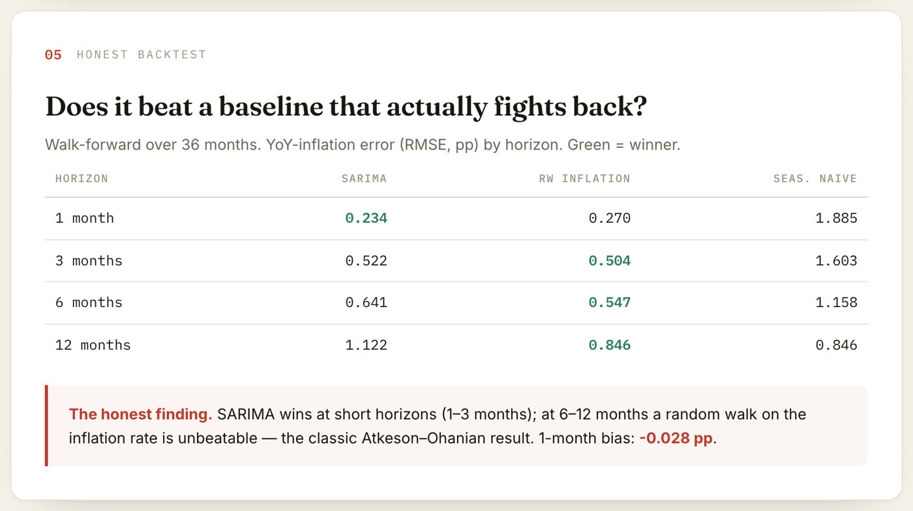
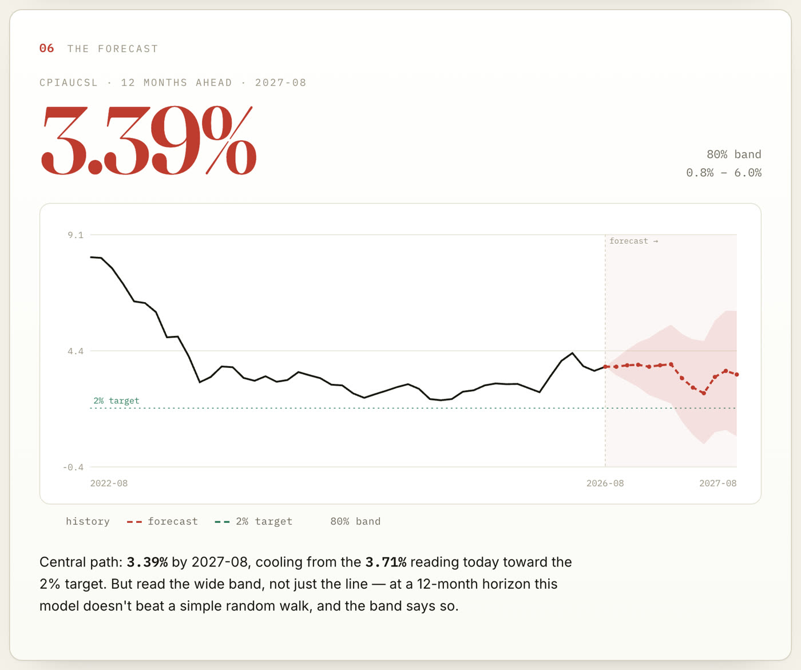

Inflation Forecaster
Forecasting US consumer-price inflation with a seasonal ARIMA model, then checking it against the baselines that are genuinely hard to beat. The point isn't nailing the number. It's showing the process, honestly.
Python · statsmodels · stdlib web UI · MIT · data: FRED, no API key
The result, in four numbers
As of August 2026 data, US CPI is running at 3.71% year on year.
How it works
The US CPI index from FRED (CPIAUCSL): 955 monthly observations from 1947 to 2026, pulled from the public CSV.
Seven seasonal ARIMA candidates are fitted on log(CPI) and ranked by AIC. The winner is SARIMA(1,1,2)(0,1,1)12.
Walk-forward over the last 36 months: at each month it forecasts 1, 3, 6 and 12 months ahead using only the past, like a real forecaster.
A random walk on the inflation rate and a seasonal naive forecast. They are the numbers a model has to beat to be worth anything.
Does it beat a baseline that fights back?
Error on year-on-year inflation (RMSE, percentage points) by forecast horizon. Green is the winner.
| Horizon | SARIMA | Random walk | Seasonal naive |
|---|---|---|---|
| 1 month | 0.234 | 0.270 | 1.885 |
| 3 months | 0.522 | 0.504 | 1.603 |
| 6 months | 0.641 | 0.547 | 1.158 |
| 12 months | 1.122 | 0.846 | 0.846 |

The forecast, with its uncertainty
Twelve months out the model sees inflation cooling from 3.71% to 3.39%, but the 80% band runs from 0.8% to 6.0%. At that horizon the band is the real answer, and it says as much.

Run it yourself
The app is an animated, step-by-step working paper that runs the model live (a small Python server, so it isn't hosted here). Pick CPI, Core CPI, PCE or Core PCE.
git clone https://github.com/nachoie123/inflation-forecaster cd inflation-forecaster pip install -r requirements.txt python3 server.py # http://localhost:8000